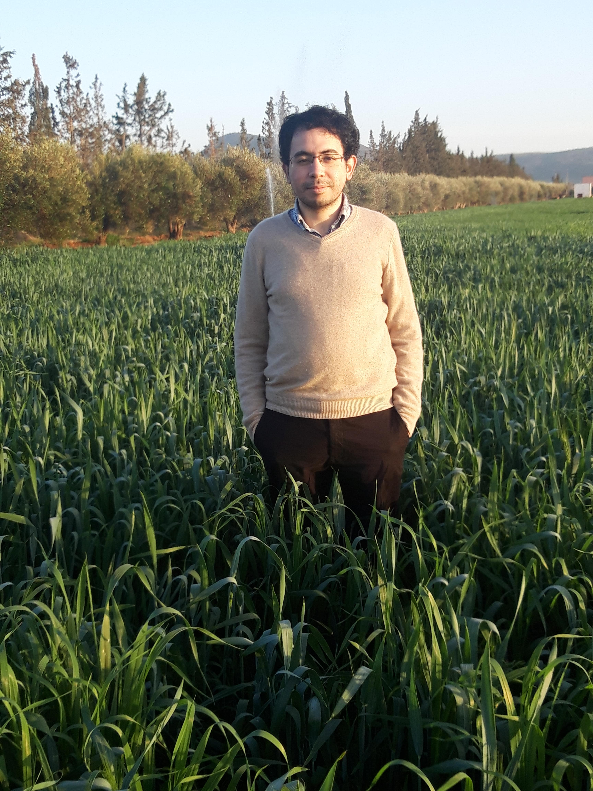

Ayoub Belhadji
Ph.D. student
Laboratoire CRIStAL
Bâtiment Esprit, office S1.52
Avenue Paul Langevin,
59650 Villeneuve-d'Ascq,
France
Bâtiment Esprit, office S1.52
Avenue Paul Langevin,
59650 Villeneuve-d'Ascq,
France
About me
I am a third year Ph.D. student at CRIStAL under the supervision of Pierre Chainais and Rémi Bardenet. I am currently interested in leveraging determinantal point processes (DPPs) for approximation tasks with provable guarantees: the column subset selection problem for low rank approximations and quadratures and interpolations in RKHS.
Publications
Submitted for a conference (February 2020).
[arXiv]
GRETSI, 2019, Lille, France.
Submitted for a journal (December 2018).
Talks
XXVIIème Colloque francophone de traitement du signal et des images
(GRETSI)
[slides]
Département de mathématiques de l'Université du Québec à Montréal
(UQAM)
[slides]